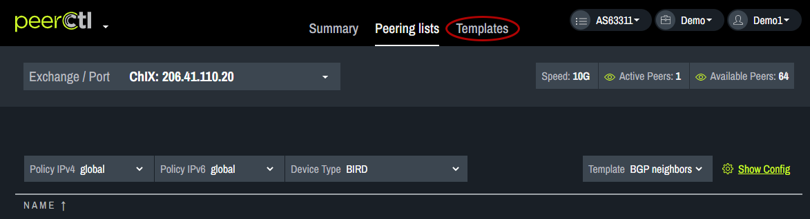

Request Peering
To request peering with a new network, click on Request Peering..
Note: When a peering request is made it includes all the shared exchange points. The shared exchange points can be viewed by clicking the arrow next to Shared Exchange Points.
In the pop-up box, on the top left is the network name, ASN and email contact.
The top right shows the workflow indicating the current stage of the network connection process. Request indicates the user is making a new network connection request. Configured indicates both parties have done their network configuration. Session Live indicates the connection is complete.
For each step of the Request Peering process, an email is sent to the network of interest. The default email option can be used or a custom email can be created. The default email appears in the Request Peering pop-up box. Custom email Templates will appear in the drop down menu.
Custom Email Templates
To create custom emails, close the Request Peering pop-up box and click on the Templates tab at the top of the window. 
Click on Email Templates at the top of the window.
Enter a name for the custom Template. Choose the Type of Template to be customized. Each type of template is based on one of the three steps in the Request Peering process. The default text will appear in the Body box and can be edited. Changes can be viewed in the Preview box below the Edit box. Edits are saved using the Save link at the bottom of the window. Custom email Templates will appear in the Request Peering pop-up box.
Note: The following variables autofill into the email based on your network settings. These variables should not be edited.
-
peer- peer network objectpeer.company_name- organization name of the peer networkpeer.asn- ASN of the peer network
-
my- my network objectmy.company_name- organization name of your networkmy.asn- ASN of your networkmy.website- URL of your website (as obtained from PeeringDB data)
-
mutual_locations- list of mutually shared exchangesexchange.name- name of the internet exchangeexchange.ip4- ip4 addressexchange.ip6- ip6 address
-
selected_exchanges- list of selected exchanges when opening a peering request through the Networks viewexchange.name- name of the internet exchangeexchange.ip4- ip4 addressexchange.ip6- ip6 address
Note: List of jinja variables:
-
sessionslist of session objects available onSession ConfiguredandSession Liveemailssession.peer_ip4peer ipv4 address for the sessionsession.peer_ip6peer ipv6 address for the sessionip4: ipv4 address for the sessionip6: ipv6 address for the sessionprefix_length4: max prefixes ipv4prefix_length6: max prefixes ipv6
The newly added Template will appear in the Templates list. It can be edited or deleted from here.
Peering Process
Step 1: Request
Once the Default or Custom email template has been chosen click Send. When the network receives the message they will reply to the email on file with your PeeringDB account.
Step 2: Configured
Once the network has confirmed the request, provided configuration information and the connection has been configured, the next step is to confirm this with the network. Click on the Request Peering link for the desired network. The Configured step will be highlighted in the Workflow. Choose the Default or Custom email template and click Send.
Step 3: Session Live
When the request has been completed, click on the Request Peering link for the desired network. The Session Live step will be highlighted in the Workflow. Choose the Default or Custom email template and click Send. The network will now show as LIVE and appear green.